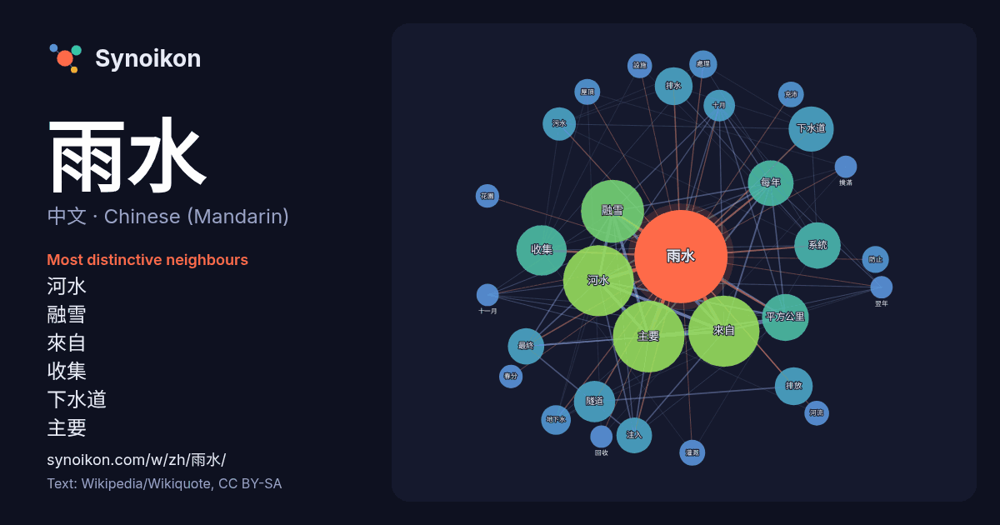

中文 · Chinese (Mandarin) · word of the day list
雨水
“rain” · The words found around it in 756 instances from Chinese (Mandarin) Wikipedia, Wikiquote.

Most distinctive neighbours
- 河水 84×
- 融雪 69×
- 來自 60×
- 收集 38×
- 下水道 37×
- 主要 27×
- 排水 26×
- 排放 26×
- 隧道 25×
- 每年 24×
- 注入 22×
- 污水 20×
- 系統 20×
- 地下水 16×
- 十月 16×
- 平方公里 14×
- 最終 14×
- 充沛 13×
- 灌溉 12×
- 屋頂 12×
× = how many times more often than in general Chinese (Mandarin) Wikipedia text.
Most frequent neighbours
- 主要 93
- 來自 92
- 河水 91
- 融雪 72
- 收集 46
- 平方公里 40
- 系統 39
- 每年 38
- 下水道 37
- 隧道 31
- 排放 26
- 排水 26
- 最終 24
- 注入 23
- 污水 20
- 十月 18
- 地下水 16
- 大量 15
- 由於 15
- 處理 14
In context
- 二十四节气 立春 雨水 惊蛰 春分 清明 谷雨 立夏 小满 芒种 夏至 小暑 大暑 立秋 处暑 白露 秋分 寒露 霜降 立冬 小雪 大雪 冬至 小寒 大寒 ← ↓ → ↑ 數據來源：噴氣推進實驗室線上曆書系統 雨水，是二十四节气中第二个节气，指太阳到达黄经330°时，在公历每年2月18日-20日之间 Wikipedia snippets · 雨水
- 雨水撲滿（英語：Rainwater harvesting）又稱雨撲滿、雨水集蓄，是雨水的累積用於現場再利用而不是允許其流失。雨水可以從雨水撲滿或屋頂雨水收集器收集，或用網或其他工具從霧和露水收集新鮮的水，收集的水被重定向到深坑、井、或具有滲透的水庫。其用途包括用於花園、牲畜、灌溉的水，適當處理的家庭 Wikipedia snippets · 雨水撲滿
- 有三到四個颱風侵襲臺灣。颱風為臺灣提供了豐沛的水分，但由於降雨空間和時間分佈十分不均，容易引發洪水與土石流等災害。另一方面，如果缺少夏季颱風所帶來的雨水，到冬季就容易出現乾旱；因此，各大河川普遍修築水壩，雨季蓄水兼發電，旱季提供民生用水。 臺灣位於亞熱帶與熱帶，以及歐亞大陸與太平洋的交界處。氣候條件 Wikipedia snippets · 臺灣
- 二十四節氣的命名反映了季節和气候的變化。立春、春分、立夏、夏至、立秋、秋分、立冬、冬至，又稱八位，是區分公轉運動對於地球影響的八個關鍵節點；雨水、驚蟄、清明、穀雨、小滿、芒種、小暑、大暑、處暑、白露、寒露、霜降、小雪、大雪、小寒、大寒等十六個則反映了四季中更細微的氣候變化。 Wikipedia snippets · 节气
- 1萬人仍待改善。 2022年，中華民國第一產業占名目國內生產毛額（生產面）1.41%。農業就業人口占4.6%。臺灣氣候溫暖、雨水豐沛，適合作物生長。過去臺灣藉由土地改革、技術引進促成農業發展，但近期因加入世界貿易組織受到衝擊。目前農耕地約78.7萬頃（占土地面積22.7%），但農戶平均耕地0 Wikipedia snippets · 中華民國
- 雨水排水系统，（在英國、美國和加拿大稱為雨水管道，在英國稱為公路排水溝，在英國稱為地表水排水溝/污水溝，在澳洲和紐西蘭稱為雨水排水溝）是一種基礎設施，用於將過多的雨水和地下水從不透水錶面（例如鋪砌街道、停車場、人行道和屋頂）排出。雨水排水系統的設計多種多樣，從小型住宅滲水井到大型市政系統不等。 Wikipedia snippets · 雨水排水系統
- 2℃到30℃。南部沿海地区冬季的温度会高些，而内陆山区的气温则非常低。 韩国年平均降水量为1,500毫米左右，由南向北逐步减少。受東南季风影响，夏季雨水多而集中，6月底至7月底有“梅雨”。6-8月的降雨量为全年的70%。南部沿海地区在夏末时常有台风。首尔的年平均降雨量为1370毫米；釜山1470毫米。 Wikipedia snippets · 大韩民国
- 約、預算、興廢與變更均先經官方的認可，也等同將台灣的埤圳收歸國有。 此外，政府也重修老舊埤圳，並在各地進行新的埤圳工程建設。 早期的嘉南平原由於缺乏雨水，這片平原在秋冬是極為貧瘠的荒漠。台灣總督府技師八田與一（1886年—1942年）以十年的光陰，創建當時東南亞最大的水庫──烏山頭水庫。嘉南大圳自1 Wikipedia snippets · 台灣日治時期
More Chinese (Mandarin) words
Precomputed on 2026-10-09 with default settings (±5 words, medium corpus). The interactive map can refresh it with live data.